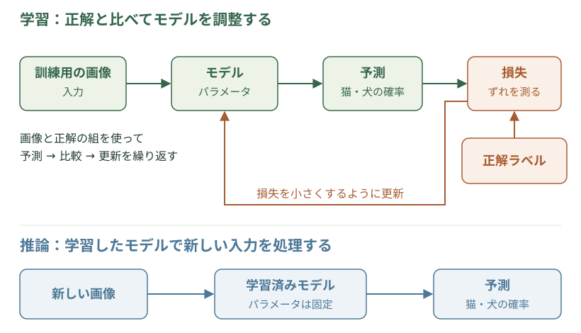
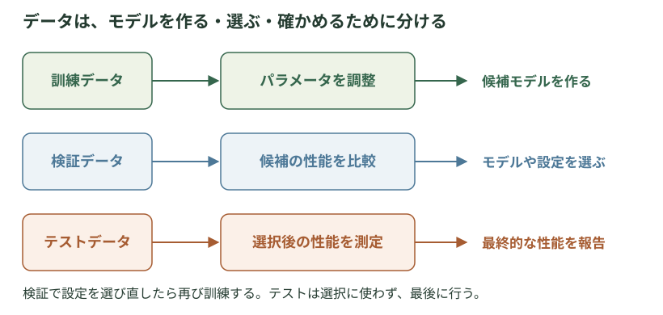

基礎と代表的な機械学習手法 · Machine Learning Fundamentals
学習・最適化の基本概念
機械学習は、データから規則性を学び、未知のデータに対する予測や判断に役立てる方法です。モデルと学習の関係、損失関数とパラメータの更新、汎化と過学習、性能評価の基本を説明します。
機械学習における「学習」とは
機械学習では、入力から答えを計算するモデルを、データを使って調整します。これが学習です。猫と犬の分類なら、写真と「猫」「犬」という正解を使い、新しい写真も見分けられるようにします。データに付けた正解をラベルと呼びます。
ここでは、入力と正解の組から学ぶ教師あり学習を例に、モデルを作り、使い、確かめる流れを見ます。
タスク・モデル・特徴
タスクは、モデルを使って解きたい問題です。画像が猫か犬かを答えるように種類を予測するタスクを分類、住宅価格や気温のような数値を予測するタスクを回帰と呼びます。
モデルは、入力から出力を計算する仕組みです。猫と犬の分類なら、入力は画像、出力はそれぞれの種類である確率などです。多くのモデルには、入力のどの情報をどの程度使うかを決める数値があり、学習によって調整するこれらの値をパラメータと呼びます。ニューラルネットワークの重みは、その一例です。
モデルが扱えるように、データの性質を数値で表したものを特徴や表現と呼びます。画像なら、色や輪郭、模様などが手がかりになります。人が使う特徴を設計する方法もあれば、深層学習のように、予測に役立つ表現を作る処理そのものを学習する方法もあります。
学習と推論
学習したモデルを使い、入力から予測などの出力を得る処理を推論と呼びます。猫と犬の分類なら、学習では画像と正解を使ってパラメータを調整し、推論では新しい画像だけを入力して猫か犬かを予測します。通常の推論では、学習済みのパラメータを固定して計算します。
学習と推論を区別すると、モデルを作るために必要な情報と、できあがったモデルを使うために必要な情報が分かります。正解ラベルは学習や評価で必要でも、利用時の入力には含まれません。
損失関数と学習の進め方
モデルを改善するには、出力がどのくらい望ましいものかを測る必要があります。損失関数は、学習で小さくしたい量を定める関数です。教師あり学習では、予測と正解のずれを測るものを使います。例えば数値を予測する回帰では、予測値と正解の差を二乗した値を損失にできます。
ニューラルネットワークなどでは、次の処理を繰り返して学習します。
- 訓練用のデータをモデルに入力し、予測を計算する。
- 予測と正解を比べ、損失を計算する。
- 多くの訓練例での損失を小さくするように、パラメータを更新する。
猫と犬の分類でも、正解の種類に高い確率を割り当てるほど損失が小さくなる関数を使い、予測を改善していきます。このようにモデルを調整する具体的な手続きを学習アルゴリズムと呼びます。損失関数は「何を小さくしたいか」、学習アルゴリズムは「どう調整するか」を定めます。

パラメータの更新と学習率
損失を小さくするためにパラメータを調整する計算を最適化と呼びます。猫と犬を見分けるモデルでも、どの重みをどちらへ動かすと損失が減るかを調べて更新します。一つの重みを少し増やしたときの損失の変化率が微分で、それを全パラメータ分並べたものが勾配です。
勾配降下法は、勾配が示す損失の増加方向と逆へ重みを動かす方法です。一回に動かす幅を調整するのが学習率です。小さすぎると改善に時間がかかり、大きすぎると損失が増えたり更新が不安定になったりします。
詳しく：更新の式・学習率の操作例・代表的な更新法
勾配降下法の計算
θはパラメータ全体、tは更新回数、Lは損失、η（イータ）は更新幅を決める学習率、∇Lは勾配です。「今の重みから、学習率×勾配を引く」と読みます。損失が増える方向の逆へ進むための計算です。
山の高さ＝損失。地形上の点＝現在のパラメータ。横方向の二つの座標を更新すると、点が斜面を下り、損失の小さい谷へ近づきます。色の違う軌跡はSGD・Momentum・RMSProp・Adamによる進み方の違い、下のグラフは更新に伴う損失の変化です。二変数の関数で最適化を可視化した例で、どの方法が速いかは地形や学習率によって変わります。出典：Ajith Pinninti — Gradient Descent Visualizer ↗（MIT）。
学習率と更新幅
理解のため、一つの数wだけを調整し、損失をL(w)=w²とします。最小点はw=0、勾配は2wなので、「次のw＝今のw−学習率×2w」です。実際のニューラルネットワークより単純にした例です。
学習率による更新の比較
0回更新：w＝2、損失＝4。
学習率0.1なら2→1.6→1.28と近づき、0.75なら2→−1→0.5と左右を行き来しながら近づきます。1.1なら2→−2.4→2.88と離れていきます。「最小点を一回越えた」ことと「発散する」ことは同じではありません。この関数の収束条件を、そのまま複雑なモデルへ当てはめることもできません。
ミニバッチと更新法
全写真を毎回読み直して更新方向を求めると高価なので、少数の写真のまとまりであるミニバッチを使います。SGD（確率的勾配降下法）では、この一部のデータから計算した勾配で更新します。選ばれた写真が毎回違うため、更新方向は揺らぎます。
Momentumは、過去の更新方向を蓄積して、一貫して下がる方向へ進みやすくする方法です。左右への揺れをならせる場合があります。Adamは、勾配の平均と二乗の平均を移動平均で追い、成分ごとの更新の尺度を調整します。勾配の大きさが違う重みを扱いやすくする狙いがありますが、どの方法でも学習率などの設定が重要です。
更新が大きすぎる場合は学習率を下げる、極端に大きな勾配を一定範囲に抑える、入力の尺度を整えるといった工夫を考えます。数値が不安定な原因と、訓練データへ合いすぎる原因は分けて調べます。
汎化と過学習
学習に使っていないデータに対しても、適切に予測できることを汎化と呼びます。猫と犬の分類では、訓練用の画像だけでなく、別に撮影された画像でも見分けられることが目標です。
過学習は、訓練データの細部や偶然の偏りに適合しすぎて、未知のデータでは十分な性能が得られない状態です。例えば、訓練画像にたまたま「猫は室内、犬は屋外」という偏りがあると、動物の姿より背景に頼るモデルができるかもしれません。そのモデルは訓練画像をよく分類できても、屋外の猫や室内の犬を間違えやすくなります。
一方、モデルが単純すぎたり、学習が不十分だったりして、訓練データの傾向も十分に捉えられない状態を未学習（アンダーフィッティング）と呼びます。
過学習を抑えるには、多様な訓練データを集める、モデルの複雑さを調整する、学習を適切な時点で止める、といった方法があります。また、重みが極端に大きくならないようにするなど、学習に制約を加える工夫を正則化と呼びます。訓練データでの損失が小さいことだけでは、汎化がよいとは判断できません。更新や損失がある値へ落ち着くことを収束と呼びますが、収束していることも、未知の画像を正しく見分けられる保証にはなりません。
訓練・検証・テスト
未知のデータでの性能を調べるために、データを用途に応じて分けます。代表的なのが、訓練・検証・テストの三つです。

| データ | 役割 | 猫と犬の分類での使い方 |
|---|---|---|
| 訓練データ | モデルを学習させる | 画像と正解を使ってパラメータを調整する |
| 検証データ | モデルや学習の設定を選ぶ | 学習に使わなかった画像で比べ、モデルの大きさや学習を止める時点を選ぶ |
| テストデータ | 選び終えたモデルの性能を評価する | 選択に使わなかった画像で、最終的な性能を調べる |
モデルの大きさや、パラメータの更新幅を決める学習率など、学習の進め方を左右する設定をハイパーパラメータと呼びます。これらは、訓練によって求めるパラメータと区別し、検証データでの性能などをもとに選びます。
分類なら正解率、回帰なら予測値と正解の誤差など、タスクに合った評価指標で性能を測ります。学習に使う損失と、利用時の性能を判断する評価指標は、同じとは限りません。
テスト結果を見ながら設定を何度も変更すると、テストデータも実質的にモデル選びに使ったことになります。また、同じ画像やほぼ同じ画像が訓練とテストの両方に入ると、未知の画像への性能を正しく測れません。データを分ける際には、実際の利用場面を考えて、評価用のデータが学習や設定の選択に混ざらないようにします。
予測・生成・意思決定
機械学習の用途は、猫と犬の分類に限りません。数値や種類を予測するほか、文章や画像を作る生成や、ロボットの動作などを選ぶ意思決定にも使われます。文章生成ではそれまでの文章に続く語を予測するなど、これらの処理は組み合わせて使われることもあります。
何を入力し、どのような出力を得たいかによって、必要なデータ、モデル、学習の目標、評価の方法が変わります。いずれの場合も、学習に使ったデータへの適合だけでなく、目的とする利用場面で役立つかを確かめることが基本になります。
補足：表形式データの前処理
入力データの表現・前処理
データをモデルが扱える形に整える処理を前処理と呼びます。画像のほかに、設備の記録から24時間以内の故障を予測する例を考えます。一行を一台の設備の記録、各列を使用年数・機種・温度などとする表では、予測の手がかりとなる列を特徴量、予測したい故障の有無を目的変数と呼びます。目的変数は正解として使い、入力の特徴量には含めません。
同じ記録でも、値の意味に合わせて表現を選びます。
- 数値：温度や使用年数。ニューラルネットワークなどでは、値の尺度の違いが学習に影響するため、平均を引いて標準偏差で割るなどして尺度をそろえることがあります。
- カテゴリ：小型・大型などの機種。単に0、1と番号を付けても、数量や大小関係を意味しません。種類ごとに別の成分を用意して該当する成分だけを1にするone-hot表現や、種類を学習可能なベクトルに変える埋め込みを使います。
- 欠測：記録されていない温度など。代表値で補い、欠測の有無も別の特徴量として渡す方法があります。0で埋めるだけでは、実際に0℃だった場合と区別できません。センサ故障など、記録されなかった理由も確認します。
必要な前処理はモデルによって異なり、欠測を直接扱えるモデルもあります。補完に使う代表値や尺度をそろえるための平均・標準偏差は、訓練データだけから求めます。新しい設備の記録にも、その同じ値を使って前処理してから予測します。
補足：データ数とモデルの容量
データ数とモデルの容量
訓練誤差は学習に使ったデータでの誤り、汎化誤差は想定する対象から新しく得られるデータでの平均的な誤りです。テストデータで後者を推定する一方、学習理論では、データ数やモデルの自由度をもとに両者の差を調べます。
モデルの容量は、どれほど多様な規則を表せるかという自由度です。容量が大きいと複雑な関係を表せますが、データ中の偶然にも合わせやすくなります。データが増えると、偶然の規則を見分けやすくなります。
猫と犬の画像を分ける規則を、あらかじめ10通り用意して比べる場合を考えます。同じ100枚で1万通りを試す場合には、たまたまその100枚に合う規則を見つける機会も増えます。訓練でよく当たったという結果だけで、新しい画像でも当たると判断しにくくなるわけです。
理論では、試せる規則の広さに対して、どのくらいデータがあれば、訓練での成績を信頼できるかを考えます。例えば候補を固定した基本設定では、データ数を4倍にすると、訓練と未知のデータでの誤差の差を見積もる上限の項は半分になります。実際の誤りが必ず半分になるという意味ではありません。
候補を有限個に限定した場合の数式
簡単な例として、分類器の候補をあらかじめM個に限定します。n個の訓練例が同じ分布から独立に得られ、誤りを0か1で数えるとき、確率1−δ以上で全候補に次が成り立ちます。
R(h)は汎化誤差、Rに帽子を付けた記号は訓練誤差、δは保証が外れる確率の上限、logは自然対数です。右端は、候補が増えると大きく、データが増えると小さくなります。
この式は誤差の上限を示します。NNの重みの数をMに代入することはできません。教科書
例えば候補M=10、δ=0.05なら、n=100で右端の項は約0.163、n=400で約0.081です。訓練誤差に足す余裕が小さくなる、と読めます。数値は上の式を読むための計算例です。
この保証は、訓練例と新しい例が同じ分布から得られることを前提にしています。昼間の画像についての保証が、そのまま夜間の画像にも成り立つとは限りません。
学習方法が選ぶ解と汎化
訓練データによく合う重みの組が複数あるとき、どれが選ばれるかによって、未知のデータでの予測は変わり得ます。モデルの構造や学習方法が持つ「どんな規則を選びやすいか」という性質を帰納バイアスと呼びます。重みへの罰則を損失に加える正則化に加え、更新方法自体がどのような解を選びやすいかも研究の対象です。
例えば画像分類について、Zhangらの実験では、大きなニューラルネットワークが無作為に付けた正解ラベルさえ記憶できることが示されました。一方、正しいラベルで学ぶと汎化する場合があります。表せる規則の多さという容量だけでは、この違いを説明しきれません。
深層学習の理論では、データの構造、学んだ特徴、最適化が選ぶ解の性質などから、この違いを調べています。訓練損失が同程度でも、どのような予測の仕方を学んだかが重要になります。こうした実験での観察と、特定の前提のもとで成り立つ理論的な保証は区別する必要があります。
出典・参考資料
- Goodfellow, Bengio, Courville『Deep Learning』第5章：Machine Learning Basics ↗ — 学習アルゴリズム、過学習、検証データなどの基礎。